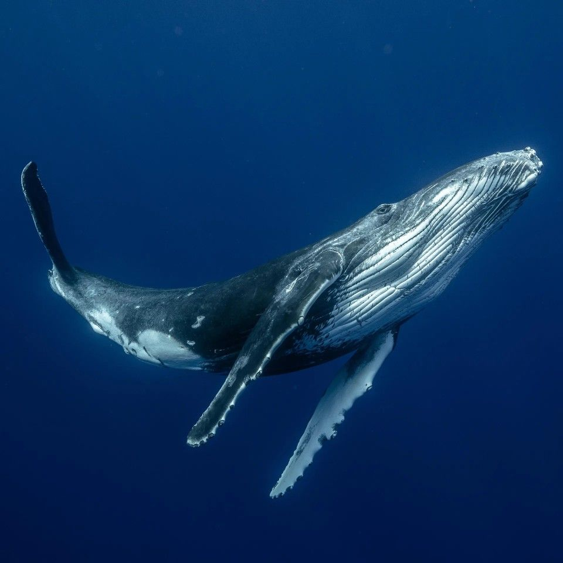
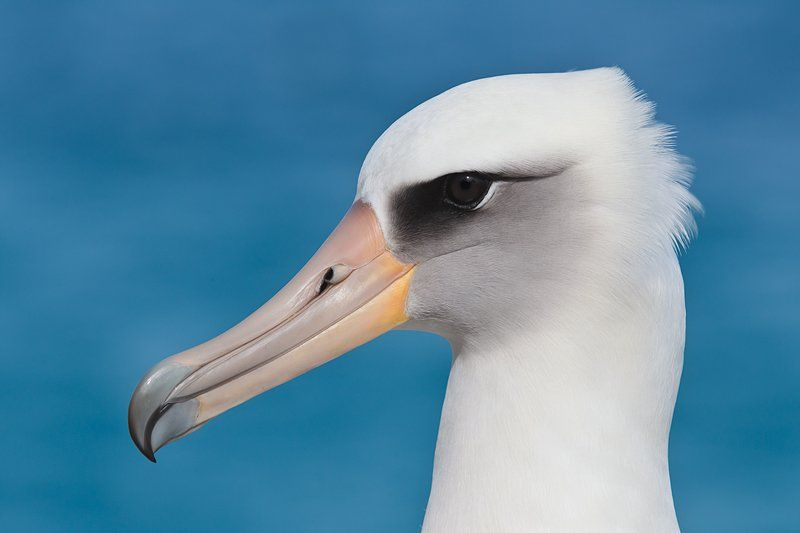

Olive Ridley Turtle
Lepidochelys olivacea
The olive ridley is a sea turtle found in tropical and subtropical waters. It feeds on animals such as crabs, mollusks, and jellyfish.
It helps maintain balance in marine food webs by feeding on different marine organisms.
It faces threats from plastic pollution, fishing gear, and the illegal collection of eggs.

North Pacific Right Whale
Eubalaena japonica
The North Pacific right whale is a rare baleen whale found in the North Pacific Ocean. It feeds mainly on small marine organisms called zooplankton.
It contributes to marine nutrient cycling through its feeding and waste.
It faces threats from commercial whaling, fishing gear entanglement, and ship strikes.

Laysan Albatross
Phoebastria immutabilis
The Laysan albatross is a seabird that spends much of its life over the open ocean. It feeds mainly on squid, fish, and small crustaceans.
It is part of the marine food web by feeding on squid, fish, and other small marine animals.
It faces threats from plastic ingestion, fishing activities, and introduced predators.